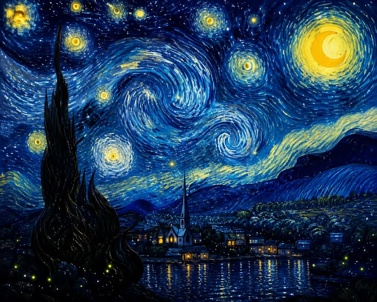

MOTION VIDEO
🎬 Un recorrido por la historia del arte
Video educativo con los principales movimientos y obras que marcaron la historia del arte occidental.
ARCHIVO VISUAL / 001
Una experiencia editorial dedicada a las obras que transforman la oscuridad, la memoria y la imaginación en imágenes. Cada pieza reunida aquí invita a mirar más despacio: a preguntarse qué cuenta el color, qué oculta la sombra y qué queda pensando el espectador después de ver la obra.
Explorar la colección ↓
LA MIRADA
Termina —o comienza— cuando alguien la observa. Esta colección propone detenerse en la atmósfera, el gesto, la luz y aquello que una imagen deja fuera del cuadro. Observar arte con calma es también una forma de leer: cada trazo, cada color y cada silencio dentro de la composición cuentan una parte de la historia.
03 / CONTEMPLACIÓN
Hay imágenes que no necesitan explicar su historia. Su fuerza está en la sensación que producen: silencio, misterio, nostalgia o asombro. Aprender a mirar una obra sin apuro —fijándose en la luz, el color y la composición— es el primer paso para entender por qué una pintura sigue emocionando siglos después de haber sido creada.
OBSERVAR · INTERPRETAR · SENTIRUna galería que se mueve: mira, crea y juega con el color.
Video educativo con los principales movimientos y obras que marcaron la historia del arte occidental.
ARCHIVO VISUAL / TEXTOS
Contexto, biografía del autor y preguntas de comprensión para cada obra de la colección.
La muerte tocando el violín es una obra representativa del simbolismo que muestra a un artista mientras la muerte aparece detrás de él tocando un violín. La escena no representa un hecho real, sino una idea: que la muerte siempre acompaña la vida y puede llegar en cualquier momento. El violín simboliza el paso del tiempo y el destino inevitable de todos los seres humanos.
La pintura también invita a reflexionar sobre la creatividad y la existencia. El artista continúa con su trabajo mientras la muerte permanece a su lado, recordando que, aunque la vida es limitada, el arte puede permanecer a través del tiempo. Por esta razón, la obra es considerada una representación de la relación entre la vida, la muerte y la inspiración artística.
Arnold Böcklin (1827-1901) fue un pintor suizo reconocido como uno de los principales representantes del simbolismo europeo. Estudió arte en Alemania y desarrolló un estilo caracterizado por representar escenas mitológicas, paisajes fantásticos y temas relacionados con la muerte, la espiritualidad y la naturaleza. Sus obras influyeron en numerosos artistas de finales del siglo XIX y principios del siglo XX gracias a su capacidad para expresar emociones mediante símbolos.
Death Playing the Violin is a Symbolist painting that shows an artist while Death appears behind him playing a violin. The scene does not represent a real event but rather an idea: death is always present in human life and can arrive at any moment. The violin symbolizes the passage of time and the inevitable destiny of every human being.
The painting also invites viewers to reflect on creativity and existence. The artist continues working while Death remains beside him, reminding us that although life is limited, art can endure through time. For this reason, the painting is considered a representation of the relationship between life, death, and artistic inspiration.
Arnold Böcklin (1827–1901) was a Swiss painter recognized as one of the leading representatives of European Symbolism. He studied art in Germany and developed a style characterized by mythological scenes, fantastic landscapes, and themes related to death, spirituality, and nature. His paintings influenced many artists of the late nineteenth and early twentieth centuries because of their powerful symbolic meaning.
1. ¿Qué simboliza principalmente el violín en la obra?
2. ¿Cuál es el mensaje principal de la pintura?
3. (English) What is the main idea of Death Playing the Violin?
4. ¿A qué corriente o estilo artístico se asocia esta obra?
5. ¿Qué sentimiento busca transmitir principalmente la presencia de la muerte en la escena?
Jugadores de ajedrez representa a varias personas concentradas en una partida de ajedrez, mostrando un ambiente de tranquilidad y reflexión. Más que retratar un simple juego, la obra simboliza la inteligencia, la estrategia y la importancia de pensar antes de actuar. Cada movimiento del tablero representa una decisión que puede cambiar el resultado de la partida, al igual que ocurre en la vida cotidiana.
El artista presta especial atención a las expresiones de los personajes y a los detalles del entorno para transmitir realismo. La pintura demuestra que las actividades diarias también pueden convertirse en arte cuando reflejan las emociones, el pensamiento y las relaciones humanas.
Thomas Eakins (1844-1916) fue un pintor, escultor y fotógrafo estadounidense, considerado uno de los artistas más importantes del realismo en Estados Unidos. Se destacó por representar escenas de la vida cotidiana, retratos y actividades deportivas con gran precisión anatómica y técnica. Además de pintar, fue profesor de arte y promovió el estudio del cuerpo humano como base para lograr obras más realistas.
Chess Players portrays several people deeply focused on a game of chess in a calm and thoughtful atmosphere. More than simply showing a game, the painting symbolizes intelligence, strategy, and the importance of thinking carefully before making decisions. Every move on the chessboard represents a choice that can change the outcome of the game, just as decisions shape people's lives.
The artist pays close attention to the expressions of the players and the details of the setting to create a realistic scene. The painting demonstrates that everyday activities can become meaningful works of art when they capture human emotions, thought, and relationships.
Thomas Eakins (1844–1916) was an American painter, sculptor, and photographer, considered one of the greatest Realist artists in the United States. He became well known for his realistic portraits, scenes of everyday life, and sports paintings. As an art teacher, he emphasized the study of human anatomy to achieve greater accuracy and realism in painting.
1. ¿Qué representa la partida de ajedrez en la obra?
2. ¿Qué aspecto destaca Thomas Eakins en los personajes?
3. (English) What does the chess game mainly symbolize?
4. ¿Qué estilo artístico caracteriza principalmente la obra de Thomas Eakins?
5. ¿Qué elemento de la pintura refuerza la sensación de concentración de los personajes?
Noche estrellada es una de las pinturas más famosas de la historia del arte. Fue realizada en 1889 mientras Vincent van Gogh permanecía en un hospital de Francia. La obra representa un cielo nocturno lleno de estrellas brillantes y remolinos sobre un pequeño pueblo, utilizando colores intensos y pinceladas dinámicas que transmiten movimiento y emoción.
Más que mostrar un paisaje real, la pintura expresa el estado emocional del artista y su manera de interpretar el mundo. Actualmente es considerada un símbolo de creatividad, sensibilidad y libertad artística, siendo una de las obras más admiradas y estudiadas del arte universal.
Vincent van Gogh (1853-1890) fue un pintor neerlandés considerado uno de los artistas más importantes del postimpresionismo. Durante su vida realizó más de dos mil obras entre pinturas y dibujos, aunque solo vendió una mientras vivía. Su uso del color, las pinceladas expresivas y la intensidad de sus emociones transformaron la historia del arte. Después de su muerte alcanzó reconocimiento mundial y hoy sus obras se encuentran entre las más valiosas e influyentes del mundo.
The Starry Night is one of the most famous paintings in the history of art. It was created in 1889 while Vincent van Gogh was staying in a hospital in France. The painting depicts a night sky filled with bright stars and swirling clouds above a small village, using vivid colors and expressive brushstrokes that create a strong sense of movement and emotion.
Rather than presenting a realistic landscape, the painting expresses the artist's emotions and his personal vision of the world. Today it is considered a symbol of creativity, sensitivity, and artistic freedom, making it one of the most admired and studied masterpieces in the world.
Vincent van Gogh (1853–1890) was a Dutch painter and one of the most influential artists of the Post-Impressionist movement. During his lifetime he created more than 2,000 paintings and drawings, although he sold only one painting while he was alive. His bold use of color and expressive brushwork transformed the history of art. After his death, he became internationally recognized, and today his works are among the most famous and valuable in the world.
1. ¿Qué caracteriza principalmente la pintura Noche estrellada?
2. ¿Por qué esta obra es considerada una de las más importantes de la historia del arte?
3. (English) Which element is most characteristic of The Starry Night?
4. ¿Quién pintó Noche estrellada?
5. ¿A qué movimiento artístico pertenece esta obra?
El payaso triste representa a un personaje vestido como artista de circo, pero con una expresión llena de tristeza y soledad. La pintura transmite la idea de que muchas personas esconden sus verdaderos sentimientos detrás de una sonrisa o de una apariencia alegre. El contraste entre el maquillaje del payaso y su rostro melancólico invita a reflexionar sobre las emociones humanas y la importancia de comprender lo que sienten los demás.
La obra también simboliza la soledad, el sacrificio y la dificultad de mantener una imagen de felicidad cuando en realidad existen preocupaciones o sufrimiento. Por ello, es una pintura que continúa siendo interpretada desde diferentes perspectivas psicológicas y artísticas.
Bernard Buffet (1928-1999) fue un pintor francés reconocido por su estilo expresionista y por el uso de líneas fuertes, figuras alargadas y colores sobrios. Desde muy joven obtuvo reconocimiento internacional gracias a sus obras, que abordaban temas como la soledad, la tristeza y la condición humana. Su trabajo se convirtió en una de las expresiones artísticas más representativas de la Francia del siglo XX.
The Sad Clown portrays a circus performer with a deeply sad and lonely expression. The painting conveys the idea that many people hide their true feelings behind a smile or a cheerful appearance. The contrast between the clown's colorful makeup and his melancholy face encourages viewers to reflect on human emotions and the importance of understanding what others may be experiencing.
The artwork also symbolizes loneliness, sacrifice, and the difficulty of appearing happy while carrying emotional pain. Because of these themes, it continues to be interpreted from both artistic and psychological perspectives.
Bernard Buffet (1928–1999) was a French painter known for his Expressionist style, strong lines, elongated figures, and muted colors. He gained international recognition at a young age through artworks that explored themes such as loneliness, sadness, and the human condition. His paintings made him one of the most important French artists of the twentieth century.
1. ¿Qué simboliza principalmente la figura del payaso?
2. ¿Qué reflexión busca transmitir la obra?
3. (English) What does The Sad Clown mainly represent?
4. ¿Qué recurso utiliza el artista para transmitir tristeza a través del payaso?
5. ¿Qué crítica suele representarse mediante la figura del payaso triste?